Avec plus de 15 ans d'expèrience professionnelle, Djs construct est le spécialiste du terrassement.
Nous réaliserons pour vous :
Parking particulier
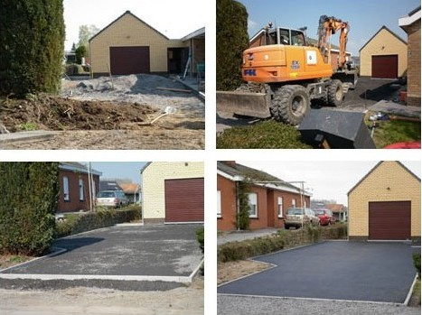 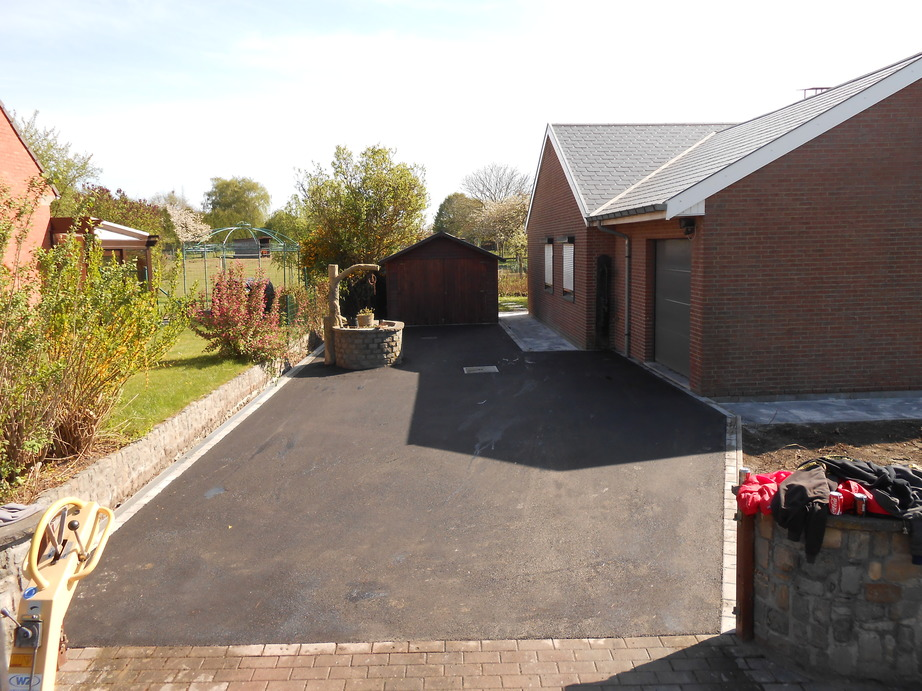
Terrassement
Cuve à eau/citerne eau de pluie
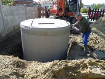 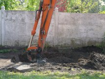
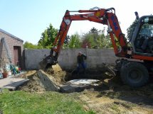
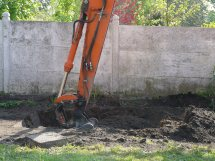
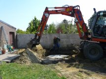

 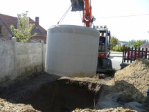
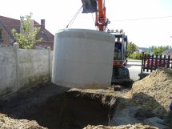

 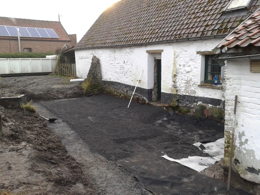
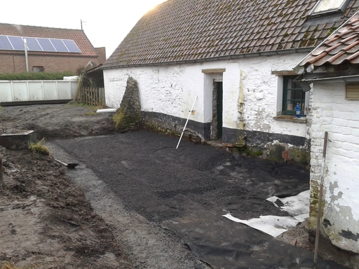

 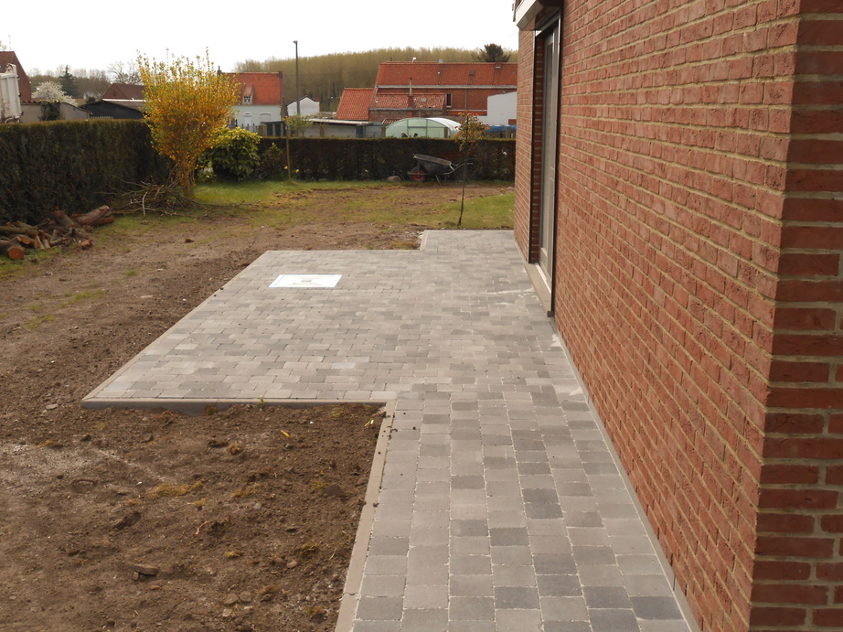
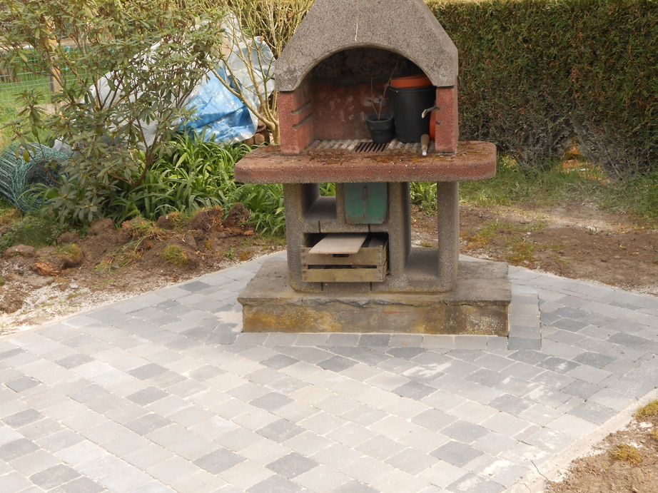
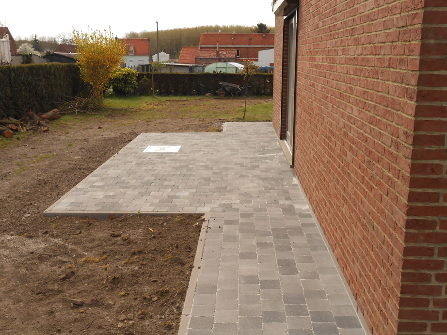
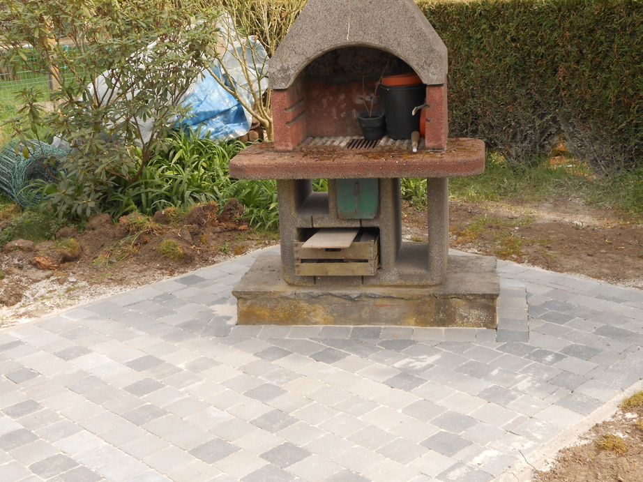